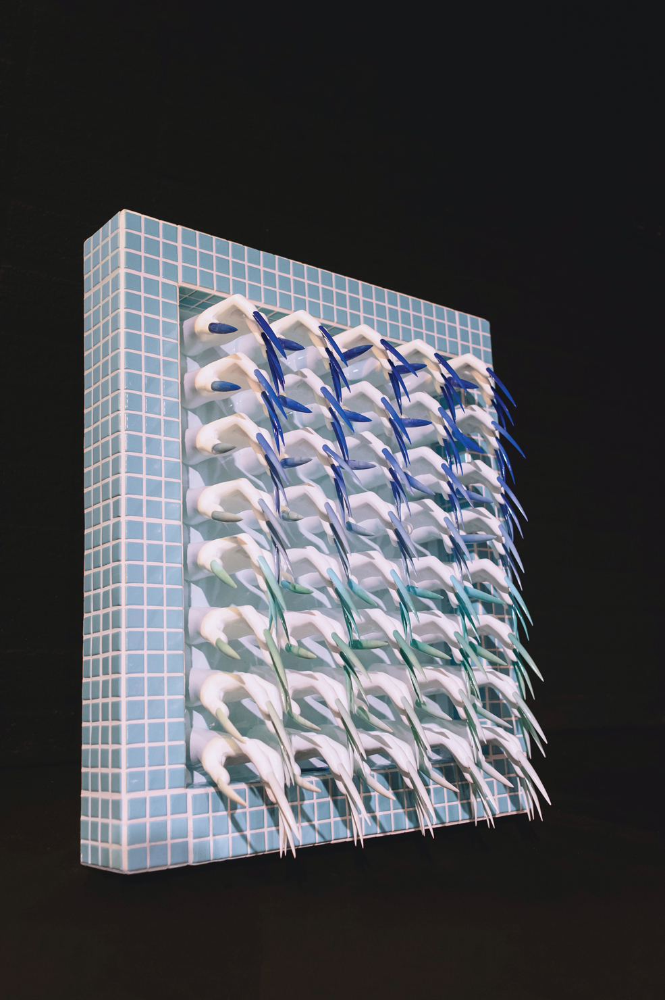
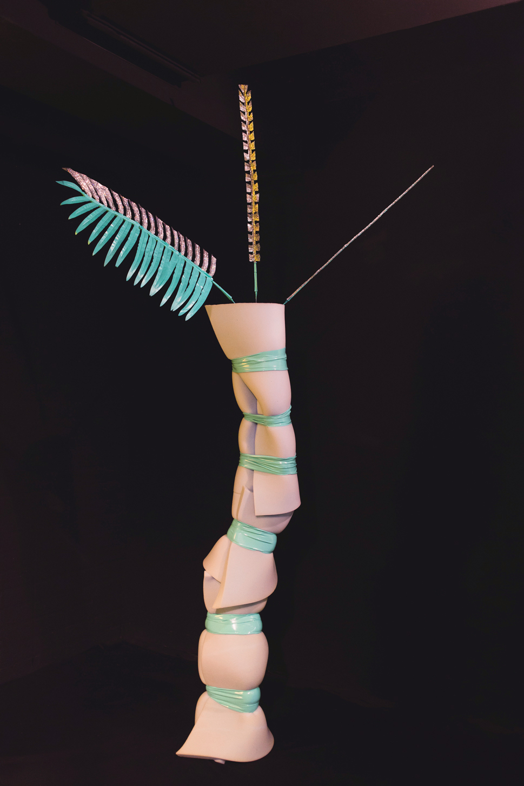
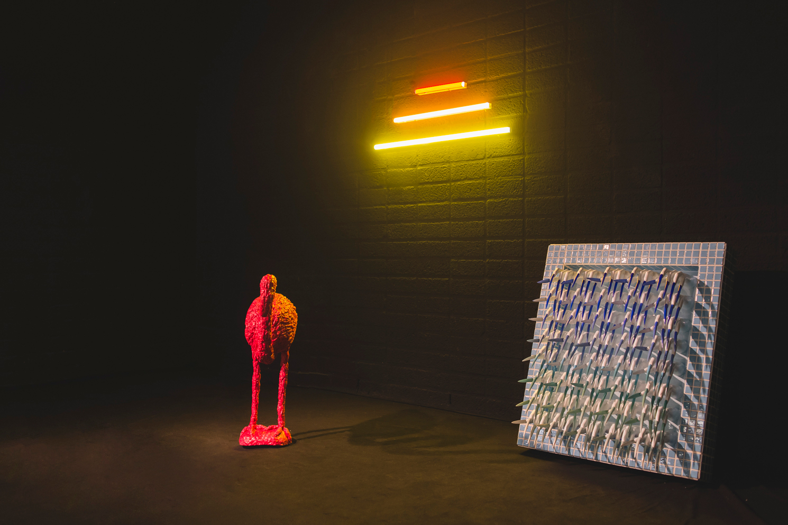
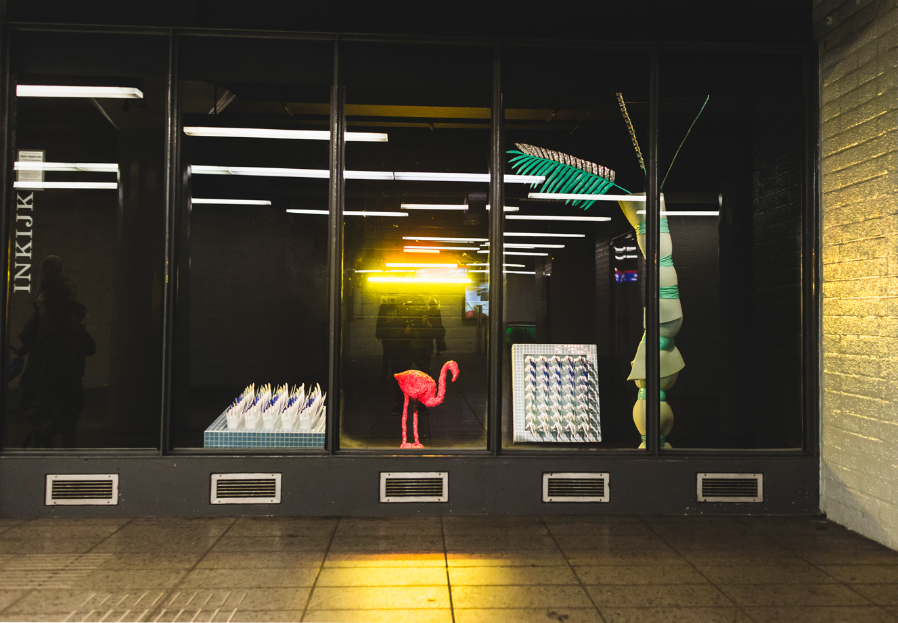

Plastic Fantastic Pool
2017 | Installation | Stichting Polderlicht @ Metro Station Wibautstraat
Celebrating the end of the summer holidays. This installation brings the beach to those who couldn't escape from the city to the sea and it consoles those who are back. The tourism industry works hard on manipulating nature in order to fit our expectations of the perfect bounty beach: importing and pinioning flamingo's, dumping bulks of white sand over dark sand etc. Paradoxically, all this hard work pollutes our beloved sea. This is emphasised in Plastic Fantastic Pool by displaying the elements in plastic á la kitsch.
Photographed by Rein Kooyman.



